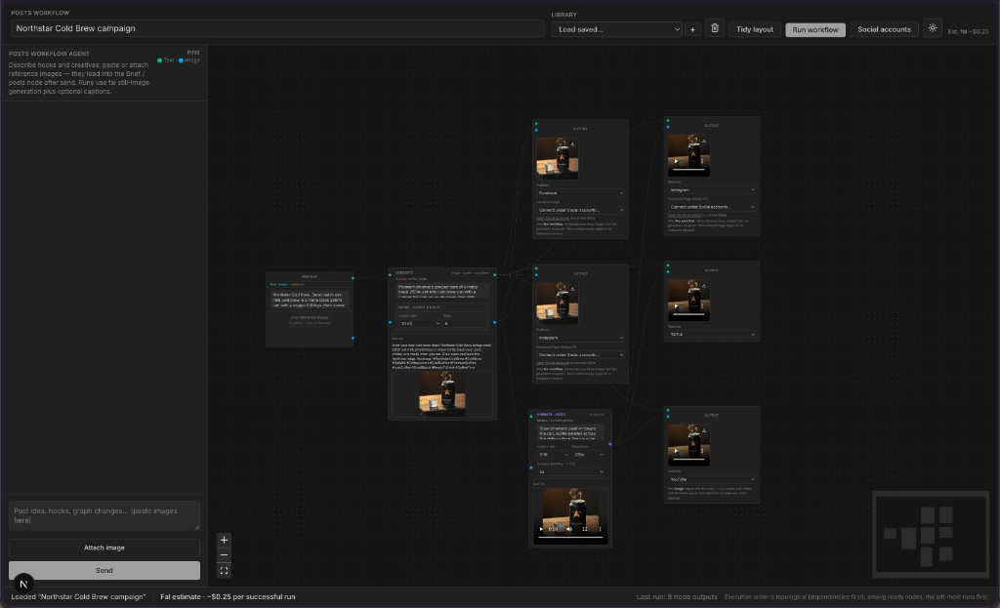

A canvas where AI builds the workflow,
and the workflow makes the posts.
Cursor — for marketing.
Native Gen is a visual node graph for social creative. You brief the agent in natural language; it reads and rewrites the canvas JSON; the runner generates images & video and publishes to YouTube and Meta — or hands you a clean export bundle.

A workflow canvas for social creative — talkable, runnable, publishable.
+ reference images
+ marketing copy
Canvas you can see
React Flow graph with typed pins: text image video. No hidden state.
Agent that edits it
Sidebar chat. The model reads the canvas JSON, rewrites it, and the UI re-renders.
Runner that ships it
Topological execution: fal generation → optional video → publish or download .zip bundle.
Three steps. Loop as needed.
Brief the agent
Describe the campaign in plain language. Paste references. The agent designs or edits the graph — nodes, wiring, platform targets, aspect presets.
Inspect & tweak
The canvas is the source of truth. Move a node, rewire an edge, drop a videoBlock in. Ask the agent to "make all exports vertical" — it edits in place.
Run and ship
Execute the graph. Outputs land per node. Publish through connected accounts, or grab a clean bundle. Re-run only the parts you changed.
Live cost estimate (~$ per fal run) is shown in the header before you press Run.
Give the AI primitives to build on — not opinions.
Abstractions are how humans cope with complexity. They're how AIs get confused. The further a tool sits from the actual data, the more the model has to guess what your API meant.
Primitive surface
- Reads and writes the actual document.
- One mental model: there is a JSON, edit it.
- Errors are about the data, not about your API.
- Validations come from the schema the runner already uses.
Opinionated surface
- Tools per concept:
add_node,connect_edge,delete_edge… - Two abstractions to learn: yours and the underlying data.
- Cross-cutting edits (rewire + re-label + re-export) span many calls.
- Every new feature = a new tool to teach.
Same insight, different industry: Unix won by exposing files and pipes, not "document objects."
We first gave the agent "node & edge" tools. It got confused.
attempt #1 Per-concept tools
A toolbelt that mirrors the data model.
add_node(type, position, data) update_node(id, partial) delete_node(id) add_edge(source, target, sourceHandle, targetHandle) delete_edge(id) relabel_node(id, label) set_export_platform(id, platform) ...
- Every change = a sequence of calls in the right order.
- Model had to track state between calls.
- Edge cases multiplied — orphaned edges, dangling handles, wrong order of ops.
- Adding any feature meant adding (and explaining) a new tool.
what actually worked Read + edit the JSON
Two tools. The document is the API.
read_workflow_canvas()
→ returns the WorkflowDocument JSON
write_workflow_canvas({ workflowJson })
→ validates with Zod, applies to canvas
- The model edits the same JSON the runtime uses.
- One round-trip can do any change — rename, rewire, replace.
- Schema errors come back as plain text; the model fixes and re-writes.
- Zero abstraction drift: there is nothing to keep in sync.
Less surface to learn → more capability per token.
For the model
- One mental model. JSON in, JSON out.
- Atomic edits. Whole graph rewrites in a single call — no partial states.
- Self-healing. Validation errors map 1:1 to the data; the model can repair.
- Transferable. Today's model and next month's model both understand JSON.
For us
- One source of truth. The Zod schema is the contract — for UI, runner, and agent.
- Features are free. Adding a node type means adding a Zod variant, not a tool.
- Debuggable. Every agent step is a diffable JSON.
- Composable. Same tool works for "build from scratch" and "edit in place."
The agent's system prompt explains the schema — not an API surface. That's all the abstraction we owe it.
Four node types. Typed pins. One JSON document.
The whole document
What the agent reads and writes:
{
"id": "…",
"name": "Spring drop campaign",
"version": 5,
"updatedAt": "2026-05-17T…",
"nodes": [
{ "id": "m1", "type": "mediaInput",
"data": { "kind": "mediaInput", "value": "…" } },
{ "id": "g1", "type": "generationBlock",
"data": { "kind": "generationBlock",
"suffix": "studio-lit, soft shadow, …",
"imageSize": "portrait_16_9" } },
{ "id": "e1", "type": "platformExport",
"data": { "kind": "platformExport",
"platform": "instagram" } }
],
"edges": [
{ "source": "m1", "target": "g1",
"sourceHandle": "text", "targetHandle": "text" },
{ "source": "g1", "target": "e1",
"sourceHandle": "image", "targetHandle": "image" }
]
}
Give AI the primitives.
It’ll build the rest.
The phase we’re in rewards builders who don’t over-abstract — the tools that win expose the data, not opinions about the data.
Native Gen is what that idea looks like for marketing: a canvas that’s also a JSON document, edited by an agent, run by a graph runner, shipped to real platforms.
Same pattern transfers anywhere there’s a workflow worth automating. Read the doc. Write the doc. That’s the whole API.
Native Gen · Cursor for marketing.